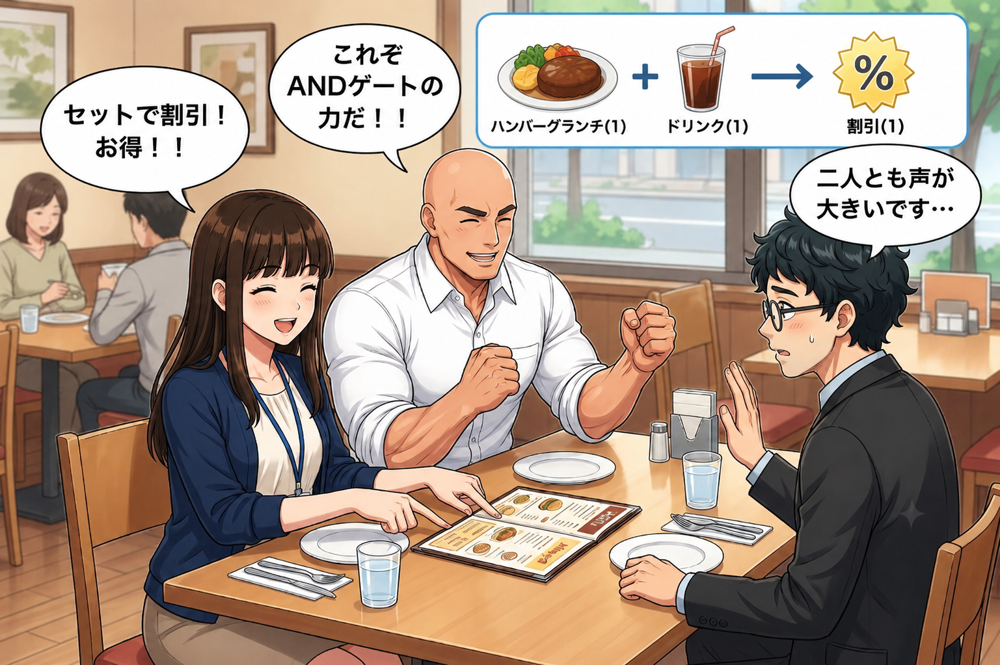
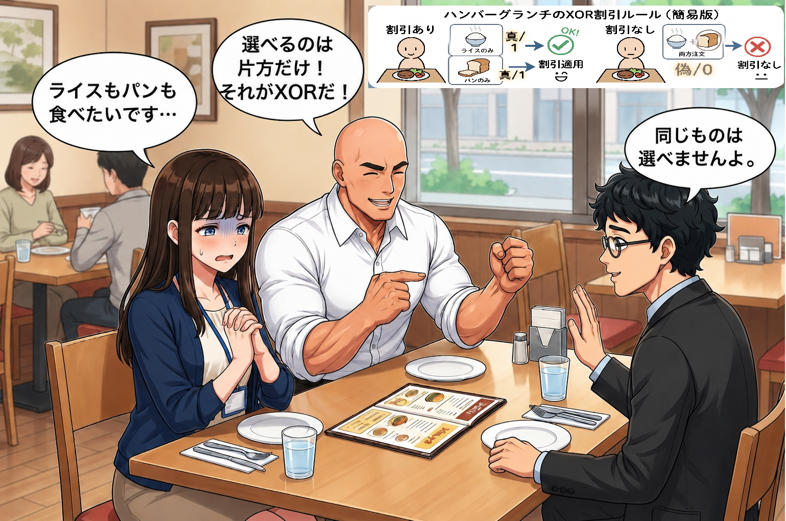
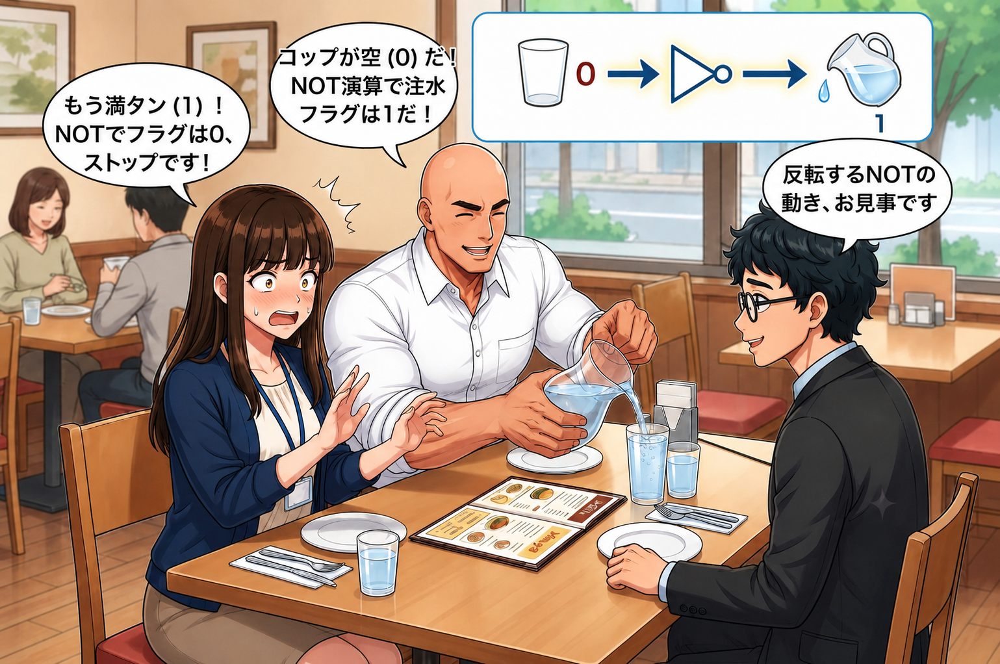
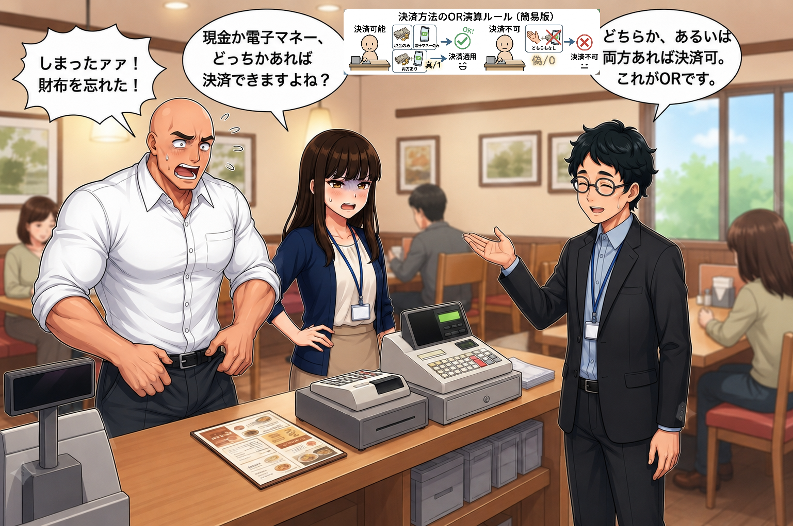

プロローグ：ファミレスのセット割引
情シス部での研修が始まって数日。
アオキ（25）は、ミズダイ課長とホシノの3人で近くのファミリーレストラン「マッピー」へランチに来ていた。
メニューを開いたアオキは、お得な割引サービスを見つける。

【ep03_01.png】ランチセットの割引メニューを選ぶアオキたち
アオキ
「あ、この『ランチハンバーグセット』、ドリンクバーを一緒に頼むと割引になるんですね」
ホシノ
「ええ、その割引には条件がありますよ。メニューの注意書きにある通り、『メインのハンバーグを注文する（1）』**かつ**『ドリンクバーを注文する（1）』の両方を満たしたときだけ、自動的に『セット割引が適用される（1）』ようになっています。」
ミズダイ
「うむ！ これぞまさに **AND（論理積）** ゲート！ メイン注文（1）とドリンク注文（1）の両方が揃って（1 AND 1）初めて割引（1）になる！ どちらか片方だけでは割引は発動せん！」
アオキ
「なるほど。すべての条件が『1（真）』の時だけ、結果が『1（真）』になるのがAND演算ですね。」
ホシノ
「その通りです。コンピュータでも同じで、すべての入力が 1 のときのみ 1 を出力するのがAND演算です。
- 『メイン注文（1）』 AND 『ドリンク注文なし（0）』 ＝ 『割引なし（0）』
- 『メイン注文（1）』 AND 『ドリンク注文（1）』 ＝ 『割引あり（1）』
こうして条件を絞り込む際にANDは活躍します。」
ライスかパンか、それとも両方？
メインのハンバーグを注文したアオキは、主食の選択肢に悩んでいた。
アオキ
「セットの主食は『ライス』か『パン』か……。うーん、どっちも美味しそうだから両方頼んじゃおうかな」
ホシノ
「あぁ、アオキさん、それはできませんよ。セット料金内で選べるのは、どちらか片方だけです」
ミズダイ
「そうだ！ 『ライスを選ぶ（1）』 **XOR（排他的論理和）** 『パンを選ぶ（1）』！ どちらか一方のみ（1と0、または0と1）を選ぶのがこのセットの鉄則！ 両方（1と1）を選んで贅沢をしようとすれば、セットの枠から『除外（0）』され、追加料金という名のペナルティが発生するのだ！」
アオキ
「（追加料金払えばいい話なんですけど……）でも、どっちか片方だけしか選べないっていうのがまさに **XOR** ＝ 排他的論理和なんですね。もちろん、どっちも頼まない（0と0）のも、セットとしては無し（0）ですしね。」
ホシノ
「その通りです。XOR演算は、**2つの入力が『異なるとき』だけ結果が『1（真）』**になり、**『同じとき』は結果が『0（偽）』**になります。身近な選択ルールにそっくりですね」

【ep03_02.png】ライスかパンのどちらか一方だけを選べるXORのルール
なみなみ注がれる水とNOTゲート
注文を終えて料理を待つ間、ミズダイ課長がアオキのコップを凝視し始めた。
アオキのコップのお水は、すでに飲み干されて空っぽになっている。
ミズダイ
「アオキくん！ 君のコップの『水が満ちているか？』というステータスが現在『0（偽）』だ！ すなわち、NOT演算によって『水を注ぐべきフラグ』が『1（真）』になったということッ！ 注ぐぞォォ！」
ミズダイ課長はテーブルのピッチャーを掴み、アオキのコップに勢いよく水を注ぎ始めた。
アオキ
「わわわ、ちょっと課長！ ストップ！ なみなみ注ぎすぎて表面張力ギリギリですよ！ これでコップが『満ちた（1）』ので、NOTによって『水を注ぐべきフラグ』は『0（偽）』になりました！ 手を止めてください！」
ホシノ
「ふふ、お見事な連携です。今のやり取りこそが、まさに **NOT（否定）** 演算ですね。NOT演算は、入力された値が『真（1）』なら『偽（0）』に、『偽（0）』なら『真（1）』にと、そっくりそのまま反転させるのが特徴です。」
アオキ
「なるほど。コップが空（0）だから水を注ぐ（1）。コップが満杯（1）だから水を注ぐのをやめる（0）。ONとOFFがひっくり返るわけですね。」
ミズダイ
「その通り！ ちなみに私の筋肉ルールでは、『トレーニングをしていない（0）』状態のNOTは『トレーニングをする（1）』！ 『トレーニングをしている（1）』状態のNOTは『さらにトレーニングをする（1）』！ 常にONなのだ！」
アオキ
「それはただのバグです。反転してないじゃないですか。」

【ep03_03.png】コップの状態（1/0）を反転させて注水要否を決めるNOTの仕組み
お会計とORゲート
楽しいランチタイムも終わり、伝票を持って3人はレジへ向かった。
レジの前で、ミズダイ課長がポケットを叩いて慌てふためいた。
ミズダイ
「しまったァァ！ また財布をデスクに忘れたぞ！ だが安心したまえ、私のスマホには電子マネーがチャージされている！ お会計は任せろ！」
アオキ
「本当に心臓に悪いので焦らせるのやめてください……。でも、会計は『現金』か『電子マネー（カード）』のどちらか一方でもあれば決済できますよね。」
ホシノ
「そうですね。これが **OR（論理和）** の仕組みです。OR演算は、複数の条件のうち**少なくとも1つが『1（真）』**であれば、結果が『1（真）』になります。」
ホシノ
「お買い物で例えると以下のようになります。
- 『現金なし（0）』 OR 『電子マネーあり（1）』 ＝ 『会計できる（1）』
- 『現金あり（1）』 OR 『電子マネーあり（1）』 ＝ 『会計できる（1）』
- 『現金なし（0）』 OR 『電子マネーなし（0）』 ＝ 『会計できない（0）』
どちらか片方、あるいは両方の入力が 1 であれば 1 を出力するのがOR演算です。」
アオキ
「なるほど。どれか1つでも支払手段があればOK、だからORですね。なんとか無事にお会計できて良かったです」

【ep03_04.png】現金か電子マネーのどちらかがあれば会計できるORの仕組み
午前問題（科目A）にチャレンジ！
無事にお会計を済ませ、お店を出る前に、ホシノさんがファミレスのテーブルの上でメモ帳を使って試験問題を書き出した！
【問題1】
2つの入力A、Bに対する出力Xの真理値表が以下のようになるとき、この論理演算を示すものはどれか。
ア：AND
イ：OR
ウ：XOR
エ：NOT
アオキ
「表を見ると……
・AとBが『0と0』のときは『0』
・AとBが『0と1』、または『1と0』のように『値が異なるとき』は『1』
・AとBが『1と1』のときは『0』
値が異なるときだけ1が出力されているから、これはさっき習ったライスとパンの選択と同じ！ 正解は **『ウのXOR』** です！」
ホシノ
「大正解です！ 素晴らしいですね。この表を**真理値表（しんりちひょう）**と呼び、試験では表を読み取る問題が非常によく出題されます」
【問題2】
2つのビット列 10101100 と 01101010 に対し、ビットごとの排他的論理和（XOR）演算を行った結果はどれか。
ア：00101000
イ：11101110
ウ：11000110
エ：00010001
ミズダイ
「おおお！ 今度はビット列同士の演算だな！ アオキ、XORの奥義をビット列に叩き込んでみせよ！」
アオキ
「ビットごとの演算ですね。上と下のビットを1桁ずつ見比べて、XOR（値が異なれば1、同じなら0）を計算していきます。
・1桁目（左端）：1 と 0 → 異なるから 1
・2桁目：0 と 1 → 異なるから 1
・3桁目：1 と 1 → 同じだから 0
・4桁目：0 と 0 → 同じだから 0
・5桁目：1 と 1 → 同じだから 0
・6桁目：1 と 0 → 異なるから 1
・7桁目：0 と 1 → 異なるから 1
・8桁目（右端）：0 と 0 → 同じだから 0
これらを並べると `11000110` になるので、正解は **『ウ』** です！」
ホシノ
「お見事、大正解です！ ちなみに、選択肢『ア』はAND（論理積）の演算結果、『イ』はOR（論理和）の演算結果になっております。こちらもあわせて確認しておくと理解が深まりますよ」
ミズダイ
「ガハハ！ お昼ご飯のついでに論理演算を完全に理解するとは！ アオキ、お前の脳内回路も良い具合に繋がってきたようだな！ よし、今日の研修（ランチ）を終えたご褒美に、次はプロテインドリンクをドリンクバーで調合してやろう！」
アオキ
「ドリンクバーにプロテインなんて置いてないですし、混ぜないでください……。でも、レストランのメニューにも論理演算の考え方が隠れていると思うと面白いですね！」
論理演算の基本であるAND、OR、NOT、XORをマスターしたアオキ。
日常のあらゆるシーンに隠れたコンピュータの知恵を学び、情シス部でのサバイバルはまだまだ続く！
（第3話：論理演算 編 完）